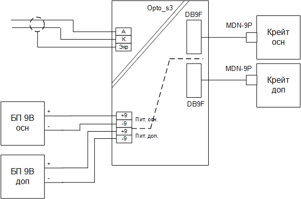

")
Аппаратура для синхронизации измерений
Аппаратура для передачи сигналов единого времени, меток времени в формате IRIG-B006 от сервера единого времени (СЕВ) ГЛОНАС/GPS или автономного источника, а также сигналов дискретных команд старт, отсчёт и т. д. на расстояния до 300 метров с обеспечением гальваноразвязки каналов всех устройств. В состав аппаратуры входит модуль передатчика Opto-O и модули приемников Opto-S, позволяющие передавать сигналы IRIG-B006 на большое расстояние, обеспечивая синхронизацию аппаратуры сбора данных различных производителей, например "Л Кард", НПП "МЕРА", National Instruments и т. д.
Устройство синхронизации Opto-o4 (передатчик) - предназначено для гальваноизолированного подключения и передачи сигналов синхронизации в формате IRIG-B006 от сервера точного времени
Метроном-600 производства "Прайм Тайм Проджект" на крейты LTR производства “Л Кард”.
.jpg)
Устройство синхронизации Opto-s3 (приемник) - предназначено для гальваноизолированного подключения и приема сигналов синхронизации от сервера точного времени Метроном-600 производства "Прайм Тайм Проджект" на крейты LTR производства “Л Кард”.
На плате установлены светодиоды “ГОТ”,”СЕК”. При установившейся синхронизации, светодиод “ГОТ” горит постоянно, светодиод “СЕК” мигает с периодом 1 сек.
Питание устройства может осуществляется от двух блоков питания: 9В. Питание построено по схеме резервирования. Для питания буферного элемента используется стабилизатор на 5В. Питание 9В подается на клеммный блок ХТ2. Во входной цепи питания 9В каждого канала стоит плавкий предохранитель, элемент защиты от неправильной полярности подключения питания. Для индикации наличия питающих напряжений и исправности стабилизаторов служат 4 светодиода.
Подключение устройства синхронизации Opto-o3 (передатчик):
- Сигнал от сервера единого времени подается на разъем X1;
- Питание 24В может подаваться на клеммник XT1 от “БП 24В осн.” и от “БП 24В доп.”, если используется резервированная система - питания, или от любого из этих блоков;
- Питание 9В может подаваться на клеммник XT1 от “БП 9В осн.” и от “БП 9В доп.”, если используется резервированная система - питания, или от любого из этих блоков;
- Сигнал с клеммника XT2 подается на устройство синхронизации (приемник) Opto_s3.
Подключение устройства синхронизации Opto-s3 (приемник):
- Сигнал от устройства синхронизации (передатчик) подается на клеммник XT1;
- Питание 9В может подаваться на клеммник XT2 от “БП 9В осн.” и от “БП 9В доп.”, если используется резервированная система питания, или от любого из этих блоков;
- Сигнал с разъемов Х1 и Х2 подается на крейты "Л Кард". Для подключения устройства к крейтам LTR-EU-2, LTR-EU-8 и LTR-EU-16 применяется кабель DB-9M - MDN-9P ЛАСУ.000212.003.

Пример создания распределенной системы автоматизации измерений и испытаний
Системное функциональное решение обеспечивается применением двух комплектов программного комплекса ACTest Platform 8x.
В данном примере по четыре устройства сбора данных (УСД) располагаются в восьмиместных крейтах LTR-EU-8-1 и по два УСД располагаются в двухместных крейтах LTR-EU-2-5 и – всего в сумме по 6 УСД (модулей АЦП) для каждого автоматизированного рабочего места (АРМ) оператора. И применено два вида подключений, когда крейты LTR-EU-2-5 располагаются на автоматизированных рабочих местах и подключаются по USB 2.0 (high-speed) и два крейта LTR-EU-8-1 с удаленным расположением подключаются к своим АРМам по Ethernet (100 Мбит) .
Так как каждый комплект программного комплекса ACTest Platform 8x допускает подключение до 8-ми УСД (модулей АЦП), то в данной системе заложена возможность расширения по числу измерительных каналов. Например для данной системы в каждый крейт LTR-EU-8-1 можно будет дополнительно установить и применить по два дополнительных модуля АЦП.
Красным цветом на рисунке приведен пример реализации системы синхронизации сбора данных от сигналов точного времени ГЛОНАСС / GPS для больших распределенных систем автоматизации измерений. Коммутационное оборудование для систем синхронизации (устройства синхронизации Opto-o4 (передатчик) и Opto-s3 (приемник)), производства компании “Лаборатория автоматизированных систем (АС), предназначены для гальваноизолированного подключения и передачи сигналов синхронизации от сервера точного времени Метроном-600 производства "Прайм Тайм Проджект" на крейты LTR производства “Л Кард”, это аппаратная и программная поддержка серверов единого времени по протоколу IRIG B006, возможность формата "секундной метки" с временем-датой от сервера единого времени.